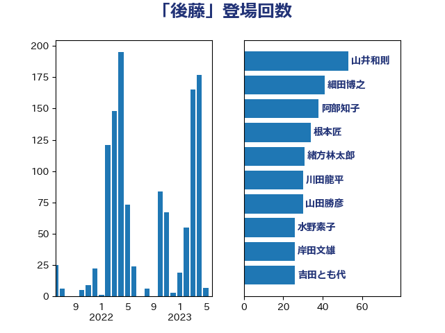

単語「後藤」

| 山井和則 | 立憲民主党 | 53 回 |
| 細田博之 | 自由民主党 | 41 回 |
| 阿部知子 | 立憲民主党 | 38 回 |
| 根本匠 | 自由民主党 | 34 回 |
| 緒方林太郎 | 無所属 | 31 回 |
| 川田龍平 | 立憲民主党 | 30 回 |
| 山田勝彦 | 立憲民主党 | 30 回 |
| 水野素子 | 立憲民主党 | 26 回 |
| 岸田文雄 | 自由民主党 | 26 回 |
| 吉田とも代 | 日本維新の会 | 26 回 |
| 杉尾秀哉 | 立憲民主党 | 24 回 |
| 吉田統彦 | 立憲民主党 | 23 回 |
| 塩田博昭 | 公明党 | 22 回 |
| 橋本岳 | 自由民主党 | 20 回 |
| 柚木道義 | 立憲民主党 | 20 回 |
| 山口俊一 | 自由民主党 | 19 回 |
| 大石あきこ | れいわ新選組 | 19 回 |
| 長妻昭 | 立憲民主党 | 18 回 |
| 高木かおり | 日本維新の会 | 17 回 |
| 田村まみ | 国民民主党 | 15 回 |
| 後藤祐一 | 立憲民主党 | 15 回 |
| 山田宏 | 自由民主党 | 14 回 |
| 古賀友一郎 | 自由民主党 | 14 回 |
| 阿部司 | 日本維新の会 | 13 回 |
| 海江田万里 | 立憲民主党 | 13 回 |
| 中島克仁 | 立憲民主党 | 12 回 |
| 大西英男 | 自由民主党 | 11 回 |
| 國重徹 | 公明党 | 11 回 |
| 浅野哲 | 国民民主党 | 10 回 |
| 山本順三 | 自由民主党 | 10 回 |
| 山岸一生 | 立憲民主党 | 10 回 |
| 小倉將信 | 自由民主党 | 10 回 |
| 上田清司 | 国民民主党 | 10 回 |
| 青柳陽一郎 | 立憲民主党 | 9 回 |
| 梅村聡 | 日本維新の会 | 9 回 |
| 大西健介 | 立憲民主党 | 9 回 |
| 塩村あやか | 立憲民主党 | 9 回 |
| 高木毅 | 自由民主党 | 8 回 |
| 森屋隆 | 立憲民主党 | 8 回 |
| 尾辻秀久 | 無所属 | 8 回 |
| 仁木博文 | 無所属 | 8 回 |
| 井上哲士 | 日本共産党 | 8 回 |
| 赤澤亮正 | 自由民主党 | 7 回 |
| 芳賀道也 | 国民民主党 | 7 回 |
| 本庄知史 | 立憲民主党 | 7 回 |
| 友納理緒 | 自由民主党 | 7 回 |
| 上月良祐 | 自由民主党 | 7 回 |
| 馬淵澄夫 | 立憲民主党 | 6 回 |
| 金子恭之 | 自由民主党 | 6 回 |
| 藤田文武 | 日本維新の会 | 6 回 |
| 田中健 | 国民民主党 | 6 回 |
| 松本尚 | 自由民主党 | 6 回 |
| 木原誠二 | 自由民主党 | 6 回 |
| 平口洋 | 自由民主党 | 6 回 |
| 小沼巧 | 立憲民主党 | 6 回 |
| 塩川鉄也 | 日本共産党 | 6 回 |
| 井坂信彦 | 立憲民主党 | 6 回 |
| 長谷川淳二 | 自由民主党 | 5 回 |
| 鈴木俊一 | 自由民主党 | 5 回 |
| 藤川政人 | 自由民主党 | 5 回 |
| 稲富修二 | 立憲民主党 | 5 回 |
| 石垣のりこ | 立憲民主党 | 5 回 |
| 早稲田ゆき | 立憲民主党 | 5 回 |
| 山際大志郎 | 自由民主党 | 5 回 |
| 寺田稔 | 自由民主党 | 5 回 |
| 宮本徹 | 日本共産党 | 5 回 |
| 奥野総一郎 | 立憲民主党 | 5 回 |
| 加藤勝信 | 自由民主党 | 5 回 |
| たがや亮 | れいわ新選組 | 5 回 |
| 里見隆治 | 公明党 | 4 回 |
| 道下大樹 | 立憲民主党 | 4 回 |
| 逢坂誠二 | 立憲民主党 | 4 回 |
| 谷田川元 | 立憲民主党 | 4 回 |
| 羽田次郎 | 立憲民主党 | 4 回 |
| 田畑裕明 | 自由民主党 | 4 回 |
| 本田顕子 | 自由民主党 | 4 回 |
| 山東昭子 | 自由民主党 | 4 回 |
| 山本剛正 | 日本維新の会 | 4 回 |
| 宮崎勝 | 公明党 | 4 回 |
| 太栄志 | 立憲民主党 | 4 回 |
| 堀場幸子 | 日本維新の会 | 4 回 |
| 堀内詔子 | 自由民主党 | 4 回 |
| 三浦信祐 | 公明党 | 4 回 |
| 一谷勇一郎 | 日本維新の会 | 4 回 |
| 田名部匡代 | 立憲民主党 | 3 回 |
| 池下卓 | 日本維新の会 | 3 回 |
| 櫻井周 | 立憲民主党 | 3 回 |
| 榛葉賀津也 | 国民民主党 | 3 回 |
| 柴田巧 | 日本維新の会 | 3 回 |
| 松野博一 | 自由民主党 | 3 回 |
| 村田享子 | 立憲民主党 | 3 回 |
| 末松信介 | 自由民主党 | 3 回 |
| 朝日健太郎 | 自由民主党 | 3 回 |
| 市村浩一郎 | 日本維新の会 | 3 回 |
| 山本香苗 | 公明党 | 3 回 |
| 小西洋之 | 立憲民主党 | 3 回 |
| 小沢雅仁 | 立憲民主党 | 3 回 |
| 古川禎久 | 自由民主党 | 3 回 |
| 倉林明子 | 日本共産党 | 3 回 |
| 鈴木英敬 | 自由民主党 | 2 回 |
| 越智隆雄 | 自由民主党 | 2 回 |
| 谷川とむ | 自由民主党 | 2 回 |
| 西村智奈美 | 立憲民主党 | 2 回 |
| 藤丸敏 | 自由民主党 | 2 回 |
| 萩生田光一 | 自由民主党 | 2 回 |
| 神谷裕 | 立憲民主党 | 2 回 |
| 神谷政幸 | 自由民主党 | 2 回 |
| 神津たけし | 立憲民主党 | 2 回 |
| 石田昌宏 | 自由民主党 | 2 回 |
| 石原宏高 | 自由民主党 | 2 回 |
| 石井苗子 | 日本維新の会 | 2 回 |
| 石井準一 | 自由民主党 | 2 回 |
| 畦元将吾 | 自由民主党 | 2 回 |
| 田野瀬太道 | 無所属 | 2 回 |
| 湯原俊二 | 立憲民主党 | 2 回 |
| 渡辺周 | 立憲民主党 | 2 回 |
| 深澤陽一 | 自由民主党 | 2 回 |
| 森屋宏 | 自由民主党 | 2 回 |
| 林芳正 | 自由民主党 | 2 回 |
| 斉藤鉄夫 | 公明党 | 2 回 |
| 打越さく良 | 立憲民主党 | 2 回 |
| 後藤茂之 | 自由民主党 | 2 回 |
| 広瀬めぐみ | 自由民主党 | 2 回 |
| 平沼正二郎 | 自由民主党 | 2 回 |
| 平将明 | 自由民主党 | 2 回 |
| 川合孝典 | 国民民主党 | 2 回 |
| 島村大 | 自由民主党 | 2 回 |
| 岸真紀子 | 立憲民主党 | 2 回 |
| 小林茂樹 | 自由民主党 | 2 回 |
| 寺田学 | 立憲民主党 | 2 回 |
| 塩崎彰久 | 自由民主党 | 2 回 |
| 国光あやの | 自由民主党 | 2 回 |
| 吉田久美子 | 公明党 | 2 回 |
| 古賀篤 | 自由民主党 | 2 回 |
| 古屋範子 | 公明党 | 2 回 |
| 佐藤英道 | 公明党 | 2 回 |
| 下条みつ | 立憲民主党 | 2 回 |
| 三宅伸吾 | 自由民主党 | 2 回 |
| おおつき紅葉 | 立憲民主党 | 2 回 |
| 高鳥修一 | 自由民主党 | 1 回 |
| 高橋千鶴子 | 日本共産党 | 1 回 |
| 青山大人 | 立憲民主党 | 1 回 |
| 鈴木敦 | 国民民主党 | 1 回 |
| 金城泰邦 | 公明党 | 1 回 |
| 野間健 | 立憲民主党 | 1 回 |
| 野田聖子 | 自由民主党 | 1 回 |
| 遠藤良太 | 日本維新の会 | 1 回 |
| 足立康史 | 日本維新の会 | 1 回 |
| 赤木正幸 | 日本維新の会 | 1 回 |
| 角田秀穂 | 公明党 | 1 回 |
| 西村康稔 | 自由民主党 | 1 回 |
| 藤木眞也 | 自由民主党 | 1 回 |
| 藤巻健太 | 日本維新の会 | 1 回 |
| 落合貴之 | 立憲民主党 | 1 回 |
| 自見はなこ | 自由民主党 | 1 回 |
| 羽生田俊 | 自由民主党 | 1 回 |
| 紙智子 | 日本共産党 | 1 回 |
| 篠原豪 | 立憲民主党 | 1 回 |
| 篠原孝 | 立憲民主党 | 1 回 |
| 笹川博義 | 自由民主党 | 1 回 |
| 竹内譲 | 公明党 | 1 回 |
| 竹内真二 | 公明党 | 1 回 |
| 福田昭夫 | 立憲民主党 | 1 回 |
| 福島伸享 | 無所属 | 1 回 |
| 石橋通宏 | 立憲民主党 | 1 回 |
| 石川博崇 | 公明党 | 1 回 |
| 矢倉克夫 | 公明党 | 1 回 |
| 田島麻衣子 | 立憲民主党 | 1 回 |
| 牧山ひろえ | 立憲民主党 | 1 回 |
| 牧原秀樹 | 自由民主党 | 1 回 |
| 熊谷裕人 | 立憲民主党 | 1 回 |
| 源馬謙太郎 | 立憲民主党 | 1 回 |
| 浜田靖一 | 自由民主党 | 1 回 |
| 浅田均 | 日本維新の会 | 1 回 |
| 泉健太 | 立憲民主党 | 1 回 |
| 沢田良 | 日本維新の会 | 1 回 |
| 森山浩行 | 立憲民主党 | 1 回 |
| 梅谷守 | 立憲民主党 | 1 回 |
| 東徹 | 日本維新の会 | 1 回 |
| 末次精一 | 立憲民主党 | 1 回 |
| 末松義規 | 立憲民主党 | 1 回 |
| 徳永久志 | 立憲民主党 | 1 回 |
| 岡本あき子 | 立憲民主党 | 1 回 |
| 山田太郎 | 自由民主党 | 1 回 |
| 山下雄平 | 自由民主党 | 1 回 |
| 山下芳生 | 日本共産党 | 1 回 |
| 小野泰輔 | 日本維新の会 | 1 回 |
| 小川淳也 | 立憲民主党 | 1 回 |
| 小宮山泰子 | 立憲民主党 | 1 回 |
| 宮路拓馬 | 自由民主党 | 1 回 |
| 安江伸夫 | 公明党 | 1 回 |
| 守島正 | 日本維新の会 | 1 回 |
| 奥下剛光 | 日本維新の会 | 1 回 |
| 大串博志 | 立憲民主党 | 1 回 |
| 城井崇 | 立憲民主党 | 1 回 |
| 嘉田由紀子 | 無所属 | 1 回 |
| 吉田宣弘 | 公明党 | 1 回 |
| 古川俊治 | 自由民主党 | 1 回 |
| 伊藤岳 | 日本共産党 | 1 回 |
| 伊藤孝恵 | 国民民主党 | 1 回 |
| 伊東信久 | 日本維新の会 | 1 回 |
| 伊佐進一 | 公明党 | 1 回 |
| 今枝宗一郎 | 自由民主党 | 1 回 |
| 中根一幸 | 自由民主党 | 1 回 |
| 上野賢一郎 | 自由民主党 | 1 回 |
| 上田勇 | 公明党 | 1 回 |